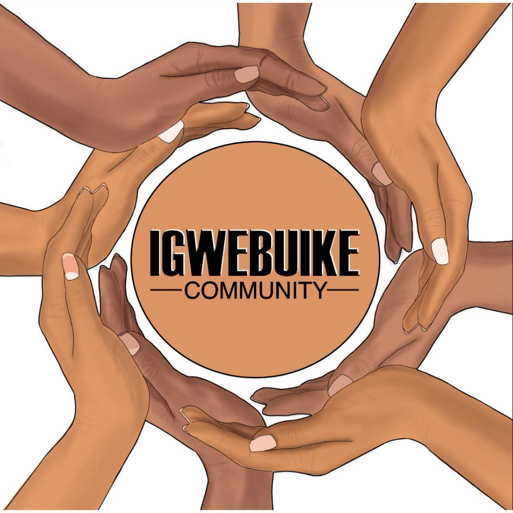

Ńdí ányí bụ̀

Ọ̀ dị́tụ́lá m̀gbè ị́ chèrè nà ị́ gà-àgwá ékwéńtị̀ gị́ ókwū n'ásụ̀sụ̀ Ìgbò? Náānị̄ nà íkwùrù:"Sị́rì, bìkò n̄yèrè’m ạ̀kạ́ kpọ̀ọ̀ ńnē’m", ékwéńtị̀ gị́ àmàlíté kpọ̄ba nọ́mbà ńnē gị́?
Ọ́ dị̀ nwúté nà ị́ nwéghị̄ íké ímē ǹké à ùgbú à, n'íhì nà tekinologi ndi di ùgbú à, dika “Siri,” “Google Home,” màọ̀bụ̀ “Alexa” ádị̄ghị̄ àsụ́nwụ́tá ásụ̀sụ́ Ìgbò, mà ọ̀bụ̀ ásụ̀sụ̀ ọ́bụ́là dí nā ḿbà Africa.
Tèkìnọ́lọ́jì dị́ íchè íchè á nà-èmégásị́ ùgbú-a ǹa ḿpághárá dị́ íchè íchè nà ụ̀wá nà-ákwàdó n’ánị̄ ásụ̀sụ́ òlé nà òlé ǹkè ńdí ọ́chá nà àsụ́. Ǹkéà pụ́tárá nà ásụ̀sụ́ Ìgbò ésòghị̀ nà ásụ̀sụ́ ńdị́ éjì wèré nà èmépụ̀tá tèkìnọ́lọ́jì. N'ágbànyèghị̀ nà íhé rúrú ǹdé ḿmádụ̀ ìrí átọ́ bí ébé dí íchè i̇́chè nà ùwà nà-àsụ́ yā, ásụ̀sụ́ Ìgbò èsónyèbèghì nà ásụ̀sụ́ ńdị́ scìéntístì ùwà jì èmépụ́tà Tèkìnọ́lọ̄jị̀. Íhé kpátàrà ńnúkwú ọ́dàchí ǹké à bụ̀ màkà ásụ̀sụ́ Ìgbò énwētàbèghì ńnúkwú dátásètì-ụ̀dà-ólū, (ǹkè ńdí ọ́chá nà àkpọ́ “speech dataset”) mà ọ̀ bụ̀ dátásètì-édémédé (ǹkè ńdí ọ́chá nà àkpọ́ “text datasets”) dí kà ásụ̀sú ńdí ọ́chá sìrì nwé.
Óghērē à kà ànyị́ bụ́ ńdị́ Igwebuike chọ̀rọ̀ ímējùpụ̀tà.
Kà Ìgbò sìrì kwúó,Igwebuike pụ́tárá na "Ị́dị̄-n'otù na enye Íké." Ìgbò nà àsị́kwá nà “ányụ́kọ́ọ́ ́mámīrí ọ́nụ̄, yà àgbá ụ́fụ́fụ̀,” yá pụ̀tàrà ǹgàlábā òtú Igwebuike, ǹkè éhìwèrè n'ịntanetị, nà ànábàtà ónyé ọ́bụ́là ná-ásụ́ ásụ̀sụ́ Ìgbò, mà nwé ḿmásí ísònyère nà íhé ànyị́ nà èmé. Ànághī àkwụ́ ụ́gwọ̄ ọ́bụ́là màka ísònỳe nà Igwebuike. Ńdị́ òtú Igwebuike jìkọ̀tàrà áká, mà nwé òfú èbùmnóbì maka ímē kà dataseti Ìgbò kpáá kásáá nà ịntanetị ébe á gà-èchèkwàbà yà. Màkà íjì mépụ̀tà èbùmnúchè ǹké à, ńdí òtú Igwebuike gà ègósí ńdí ḿmádù kà ésì éjì Common Voice ǹkè ńdí Mozilla wépụ̀tàrà, wèré ná èrékọ́rdụ̀ ụ̀dà-ólū há. Ǹké à gà-èmé kà é nwéé íké ímēpụ̀tà teknụzụ ókwū màkà ásụ̀sụ́ Ìgbò .
Èbùmnúchē ànyí
Èbùmnúchē Igwebuike Community bụ̀ ǹké à:- Ítīnyēkọ́tá ákā nà ńkwàgídé nà ńchékwá ásụ̀sụ́ Ìgbò.
- Ị́chị̄kọ́tá dataseti na ókwú Ìgbò gá-émē kà é nwéé íkē ímēpụ̀tà tekinologi dị́ íchè íchè nà àsụ̀sụ̀ Ìgbò (Artificial intelligence in Ìgbò).
- Kwàdó asụ̀sụ́ Ìgbò, mà méé yā ásụ̀sụ́ tèkìnọ́lọ̄jì nílè nọ́ n’ùwà gà éjī èmé ńgwá ọ́rū.
- Mèghéé ụ́zọ̀ màkà ńnyòchá ụ̀dị́ ọ́rụ́ dí íchè íchè éjì tèkìnọ́lọ̄jì nà ásụ̀sụ́ Ìgbò àrụ́
Íhé ányí chọ̀rọ̀ ímē
- Ị́mēpụ̀tà ebe ńdị́ nà-ásụ́ ásụ̀sụ́ Ìgbò n’ùwà níīlè gà ná-àgbákọ̀ nà íntānètì, màkà ị́tụ̄ghárí úchè màkà íhé gbásárá ásụ̀sụ́ Ìgbò nà tèkìnọ́lọ̄jì.
- Ímēzù èbùmnúchè ànyị́ ǹkè áfọ̀ 2022: ǹké bú nà ányì chọ̀rọ̀ írēkọ̀rdù áhị́rị́ókwū Ìgbọ̀ ǹké rúrú 2000. .
Kèdú kà ísī ga enyé ákā nà ḿbọ̄ à? Í nwèrè íké ínyē áká nà íhé ányí nà-èmé síté nà ụ́zọ̄ dị́ íchè íchè ńdí à:
- Rèkọ́rdụ̀ọ́ ùdà-ólū gí (Voice recording) màọ̀bụ vàlìdétìá (Validate) ásụ̀sụ́ Ìgbò ńdị́ ḿmádụ̀ ọ̀zọ́ rèkọ́rdụ̀rụ̀. .
- Wètárá ányí áhị́rị́ókwū Ìgbò ébé óbùrù íbù. .
- Sònyé (Join) ógbè ányí nà Igwebuike.
- Gbàsàá ózī màkà íhē ányị́ nà èmé nà Igwebuike síté nà ígwā ńdí ḿmádụ̀ dí íchè íchè..
- Bụ̀rụ̀ ofu ónyé n’ímé ńdí ànyí gà éwèlárá ákā-elu. Ísòró ńdị́ gá-éríté úrúà, ànyị́ gà-àkọ́sàrá ọ̀hànézè màkà gị́ nà intaneti síté nà ǹgàlàbà ébé ányí nà étò “ńdí á mà àmá” ǹkè á nà-àkpó (Hall of fame)!!
Ndí òzó nà-ákwàdó Igwebuike

Common Voice
Common Voice bụ̀ ébé ńdí Mozilla wépụ̀tàrà nà intaneti màkà ọ́rú ọ́búlà gbásárá dátásètì ásụ̀sụ́ ḿbā ụ̀wà dí íchè íchè mà kà á gà-èsí éjì dátásètì ńdị́ à àrụ́pùtá tekinologi dí íchè íchè nà ụ̀wà. Ńdí ḿmádụ̀ nà àbíá ébé à nà érèkọ̀rdú ụ̀dà ólū há (Voice recording), mà nwékwá íkē ívàlìdátì (Validate) ụ̀dà ólū ńdí òzó rèkọ́rdụ̀rụ̀.

Masakhane
Masakhane bụ̀ ọ́gbákọ́ ǹké èbùmnúchè yá bụ̀ ímē kà ńyòchá NLP (Natural Language Processing) síé íkē n'ásụ̀sụ́ dí íchè íchè dí nà ḿbà Africa. Ézíókwū, áhàtàzíé ásụ̀sú níílē di ́nà ụ̀wà, sọ̀ọ́sọ̀ alà Africa nwèrè ásụ̀sụ́ kárị́rị́ 2000. Yá mèrè ó jìrì dí ḿkpà íbūlī ńnyòchá màkà ásụ̀sụ́ dí nà Africa élū, kà éwèré hà nà èmépùtá tèkị̀nọ́lọ́gị̀ dí íchè íchè. Yà mèrè éjìrì hídó òtú Masakhene màkà ńdị́ Africa, ébé ńdí ọ́bụ́là ná èmé ńnyòchá ébé à gà èsíté n'ùsòrò gá émé kà ọ́ bàárá ńdị́ Africa ùrù.